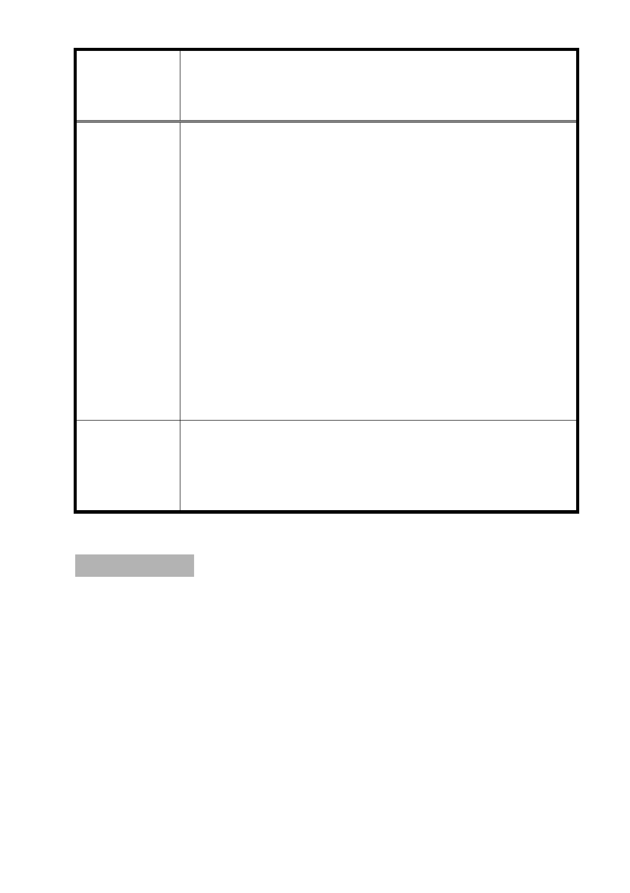

變更臺北市中山區北安段一小段25 、25-1地號等2筆土地第
案 名 三種住宅區、第三之二種住宅區為第三種住宅區（特）、第三
之二種住宅區（特）細部計畫案
妥善檢視，以維各所有權人之權益。
三、 有關同意比例之計算，係依都市更新條例第二十二條所
訂比例為準，若已達門檻實施者即可檢附計畫書圖等相
關資料向本府申請報核。
四、 有關附件所述調閱檔案資料等問題，本府仍將依都市更
新條例、個人資料保護法、市訂行政規則等相關規定辦
理。
五、 另有關合建契約戶數名單乙節，依內政部營建署 100 年
8 月 24 日營署更字第 1000053438 號函(略以)：「有關...
都更合建合約書...，因該合約書係私人間權利義務歸
屬之合意，非屬都市更新條例規定各級主管機關應審議
事項，宜由當事人間基於私法自治原則、契約自由原則
自行協調處理。」，都更合建契約係屬私人契約，非事
業計畫報核法定之必要文件及審議事項。
有關公民或團體所提意見及會議當天該陳情人所送附
委 員 會 決 議 件資料，係屬後續辦理都市更新程序之內容，請市府
都市更新處協助辦理。
散會（11：45）
- 22 -